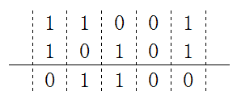
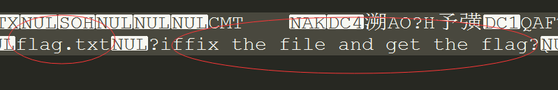

一、在计算机网络自顶向下链路层有一笔带过CRC检验，感觉这个地方很实用，也经常见所以还是认真对待了一下
百度百科：循环冗余校验(Cyclic Redundancy Check, CRC)是一种根据网络数据包或电脑文件等数据产生简短固定位数校验码的一种散列函数，主要用来检测或校验数据传输或者保存后可能出现的错误。它是利用除法及余数的原理来作错误侦测的
一句话定义就是：假设数据传输过程中需要发送15位的二进制信息g=101001110100001，这串二进制码可表示为代数多项式g(x) = x^14 + x^12 + x^9 + x^8 + x^7 + x^5 + 1，其中g中第k位的值，对应g(x)中x^k的系数。将g(x)乘以x^m，既将g后加m个0，然后除以m阶多项式h(x)，得到的(m-1)阶余项r(x)对应的二进制码r就是CRC编码。
正常人类一下子应该看不太懂，那多说几句话。
1、一个不同寻常的除法运算
g(x)和h(x)的除运算，可以通过g和h做xor（异或）运算。比如将11001与10101做xor运算：

明白了xor运算法则后，举一个例子使用CRC-8算法求101001110100001的效验码。CRC-8标准的h(x) = x^8 + x^7 + x^6 + x^4 + x^2 + 1，既h是9位的二进制串111010101。

经过迭代运算后，最终得到的r是10001100，这就是CRC效验码。
得到余数R也就是FCS，将FCS加到M上，就得到了要发送的帧。
M=10100111010000110001100
怎么检验？：
把M循环再除111010101 最后余数一定为0，否者比特流中途出现错误
二、数学推理
1.设欲传输的信息有K位,如图6.1所示
2.首先将欲传输的数据序列m(x)乘以 XR , 其中R为g(x)的最高次冥。
3.将得到的多项式XR m(x)除以约定的多项式g(x)
4.忽略除法结果的“商”，取出其余数，并与XRm(x)相加，形成K+R位的发送序列，即：m’(x) = XRm(x) +r(x)

CRC编码过程如下：
设待校验的信息码有k位，即：$$m = (m^{k-1}、m^{k-2}、m^{k-3}……m^{1}、m^{0})$$, 多项式m(x)可表示为
$$m(x) = m^{k-1}x^{k-1}+ m^{k-2}x^{k-2} +……m^1x^1+ m^0x^0 $$———————————————————————— 式（1）
用多项式g(x)的最高次幂R对应的XR 乘以m(x)，将得到式（2）
$$X^Rm(x) = m^{k-1}x^{k+R-1}+ m^{k-2}x^{k+R-2} +……m^1x^{1+R}+ m^0x^0+R $$——————————————————– 式（2）
将$$X^Rm(x)$$ 模2除以g(x)，得到多项式商为A(x),余数为r(x)，即：
$$A(x)g(x) = X^Rm(x) +r(x) $$—————————————————————————————————–式（3）
余数多项式r(x)可表示为
$$r(x) = r^{R-1}x^{R-1}+ r^{R-2}x^{R-2} +……r^1x^1+ r^0x^0 $$————————————————————————————式（4）
将式（2）和式（4）代入式（3）得
$$A(x)g(x) = m^{k-1}x^{k+R-1}+ m^{k-2}x^{k+R-2} +……m^1x^{R+1}+ m^0x^0+R + r^{R-1}x^{R-1}+ r^{R-2}x^{R-2} +……r^1x^1+ r^0x^0 $$ ——–式（5）
式（5）对应的码组为K+R位，即：
N = (mk-1+ mk-2 +……m1+ m0 + rR-1+ rR-2 +……r1+ r0) ————————————————————式（6）
从M到N就是CRC的编码过程mk-1+ mk-2 +……m1+ m0 为k位信息码；rR-1+ rR-2 +……r1+ r0为R位校验码。
在信息接收端，将接受到的K+R位码除以相同的多项式g(x),根据式（3）所产生的余数为0，则接受到的数据信息正确无误，否则则认为信息在传输过程中产生的误码。
三、bugku例题：

zip压缩包以及帮大家撸下来了
123.zip
解压下载后的文件，发现有68个压缩文件，并且每个压缩文件里都有一个4个字节大小的名为data.txt的txt文件，还有文本所对应的CRC32码，于是尝试用crc32碰撞还原出所有压缩包中的文件内容
python3 脚本
#coding:utf-8
import zipfile
import string
import binascii
def CrackCrc(crc):
for i in dic:
for j in dic:
for p in dic:
for q in dic:
s = i + j + p + q
if crc == (binascii.crc32(s.encode()) & 0xffffffff):
print (s)
f.write(s)
return
def CrackZip():
for I in range(68):
file = 'out' + str(I) + '.zip'
f = zipfile.ZipFile(file, 'r')
GetCrc = f.getinfo('data.txt')
crc = GetCrc.CRC
#以上3行为获取压缩包CRC32值的步骤
print (hex(crc))
CrackCrc(crc)
dic = string.ascii_letters + string.digits + '+/='
f = open('out.txt', 'w')
CrackZip()
f.close()然后out.txt文本是这样的,根据碰撞出内容的格式（末尾两个==）推断这段数据是base64编码过的，先解码，根据解码结果中的flag.txt推断这可能是一个压缩包，同时根据fix the file and get the flag知需要修复文件

将解码后的文件导入16进制编辑器（如010editor），观察数据，发现存在rar的文件尾C43D7B00400700，但缺少文件头，于是补上rar的文件头526172211A0700。


试了好久不会玩winhex 尴尬，最后发现是先填充0然后覆盖
然后改后缀名拿到了这个包
out.rar flag在注释里